비개발자도 Claude Code를 쓸 수 있을까요?
진행자 캘럼 존슨은 비개발자의 자리에서 질문을 시작해요. Claude Code라는 이름에 'Code'가 들어 있고 터미널 화면이 낯설어서, 많은 사람이 '개발자용'이라고 여기고 손을 떼요. 게스트 네이트 허크(Nate Herk)는 기술 배경 없이 콘텐츠, 교육, 행사, 컨설팅 사업을 작은 팀으로 굴리고 있다고 소개돼요.
네이트의 답은 짧아요. AI에서 결과를 얻는 건 이제 원하는 것을 분명히 말하는 일이고, 하나 더 붙이면 '잘된 결과'가 어떤 모습인지 말하는 일이에요. 사람은 원래 자기가 뭘 원하는지 잘 알면서 스스로 발목을 잡는다고 봐요. Claude Code를 만든 보리스 체르니나 샘 올트먼처럼 AI 모델을 만드는 쪽 사람들도 'AI가 못 할 것 같은 일을 시켜 보라'고 조언한다고 덧붙여요.
Getting results out of AI at this point is just about communicating clearly what you want.
지금 AI에서 결과를 얻는 건 결국 원하는 걸 분명하게 전달하는 일이에요.
— 영상 02:16
두 세계 사이의 간극
진행자는 미리 나눈 대화에서 네이트가 한 말을 꺼내요. 한쪽에는 매일 쏟아지는 새 도구를 따라가는 사람들이 있고, 다른 쪽에는 ChatGPT를 한 번도 안 열어 본 사람들이 있다는 거예요. 네이트는 대학 동기들 얘기를 해요. 회사에서 Copilot 정도만 허락되다 보니 'AI는 엑셀 수식도 틀리게 넣는다, 과대광고다'라고 느낀대요.
그래서 전환점은 남의 데모를 보는 게 아니라 직접 겪는 순간이라고 해요. 프롬프트 하나를 넣었는데 고칠 게 남은 결과가 아니라 '한 시간 걸릴 일이 2분 만에 끝났다'는 결과가 돌아오는 순간이에요.
챗봇과 무엇이 다른가요
Claude나 ChatGPT를 자주 쓰는 사람도 매번 우선순위, 팀 구성, 브랜드 가이드를 다시 설명해야 하는 피로를 느껴요. 네이트는 Claude Code나 Codex에서 만드는 건 기억이 있는 시스템이라고 설명해요. 팀원들에게 '나한테 묻느니 내 AI 운영체제에 물어보는 게 빠르고 기억도 더 정확하다'고 농담할 정도래요. 게다가 손이 있어서 복사·붙여넣기 대신 직접 실행하고, 내가 자는 동안에도 일해요.
네이트는 이 변화를 숫자로 표현해요. 지금 노력 1을 들여 산출 3을 얻는다면, 새 방식에 익숙해진 뒤에는 노력 1로 산출 10을 얻는 게 '새 기본값'이 된다는 거예요.
골드만삭스 인턴에서 사업가로, 첫 경험은 n8n
진행자는 네이트의 이력을 이렇게 요약해요. 몇 년 전에는 골드만삭스 인턴이었던 비개발자였는데, 지금은 사업 여러 개를 굴리고 한때 월 수십만 달러를 버는 에이전시도 운영했다는 거예요. 네이트는 처음부터 '사람 없이 키우자'가 아니라 '작은 팀이 더 많이 하게 돕자'는 생각이었다고 말해요.
방법은 단순했대요. 자기 업무에서 반복되고 지루한 과정을 찾아 하나씩 시스템으로 만든 거예요. 그 효과를 실감한 건 아팠을 때예요. 11월에 사업을 시작했는데 12월에 크게 아파 입원했어요. 그 한 달 동안 매출도 조회수도 꺾이지 않았대요. 에이전트들이 보내야 할 것을 알려 주고, 고객에게 병목이 생겼다고 연락하는 일을 대신했기 때문이에요.
n8n 워크플로를 말로 만든 날
Claude Code를 진지하게 쓴 건 약 7개월 전인 1월부터예요. 그전까지 네이트는 자동화 도구 n8n으로 브랜드를 쌓은 'n8n 전문가'였어요. 그래서 처음 해 본 일도 'Claude Code로 n8n 워크플로를 만들 수 있을까?'였어요. 계정을 연결해 달라고 하자 자격 증명만 달라고 했고, 워크플로 목록과 오늘 실행 횟수까지 읽어 냈대요.
네이트는 마이크에 대고 2분쯤 원하는 걸 말하고 간식을 가지러 갔어요. 돌아오니 거의 완성된 워크플로가 있었어요. 변수 몇 개를 연결하고 테스트 데이터를 넣어 돌리니 끝까지 실행됐어요. 아래 그림은 그가 말한 시간을 나란히 놓은 거예요.
터미널은 몰라도 돼요
진행자는 자신도 터미널 때문에 Claude Code를 미뤘다고 털어놔요. 네이트는 이제 데스크톱 앱이 꽤 쓸 만하고, 웹에서 쓰던 Claude와 거의 똑같이 생겼다고 답해요. 원하지 않으면 터미널을 볼 일이 없다는 거예요. 자동화에는 Cowork도 좋지만 가장 강력한 건 Claude Code라고 하면서, 'Code'라는 이름이 사람들을 쫓아내는 게 아쉽다고 해요.
두 가지 마음가짐과 리드 50개 데모
네이트가 화면을 공유하며 처음 띄운 건 Claude 데스크톱 앱이에요. 가운데 입력창 하나, 그 아래 Chat과 Cowork를 고르는 버튼, 오른쪽에 모델 선택(화면에는 Fable 5 High)이 보여요. 왼쪽에는 지난 대화와 프로젝트 목록이 있어요. 네이트는 '그냥 말을 걸면 된다'는 점에서 Claude Code도 똑같이 대하면 된다고 해요.

두 가지 마음가짐
네이트는 AI를 다루는 일의 대부분이 마음가짐이라고 해요. 그래서 『Becoming AI Native』라는 책까지 썼대요. 사람을 관리해 본 사람이라면 기대치를 정하고 '좋은 결과는 이런 모습'이라고 알려 주는 기술이 그대로 에이전트 관리로 옮겨 간다는 거예요. 그가 꼽는 전환점은 두 가지예요.
- 호기심 — 'AI가 이걸 할 수 있나, 없나'가 아니라 '어디까지 할 수 있나'를 물어요. 답이 예·아니요로 갈리지 않아요.
- AI가 스스로 증명하게 하기 — 사람이 결과를 검사하는 대신, 에이전트나 에이전트 팀이 서로 검토하고 고친 뒤에 넘기게 해요. 그러면 첫 번째가 아니라 여덟 번째 결과물을 받아요. 70%짜리 초안 대신 가볍게 훑어보면 되는 결과가 와요.
데모 1: Clay로 리드 50개 찾기
첫 데모 프롬프트는 짧아요. 'Clay 프로젝트로 오늘 연락할 수 있는 보강된 최적의 리드 50개를 찾고, 개인화된 연락 메시지와 함께 구글 시트로 달라'는 내용이에요. 네이트가 짚는 건 빠진 정보예요. '최적'이 뭔지, 자기 사업이 뭔지 말하지 않았어요. Claude가 프로젝트 폴더를 읽고 네이트가 누구에게 팔려는지, ICP(Ideal Customer Profile)가 뭔지 스스로 알아내기 때문이에요.
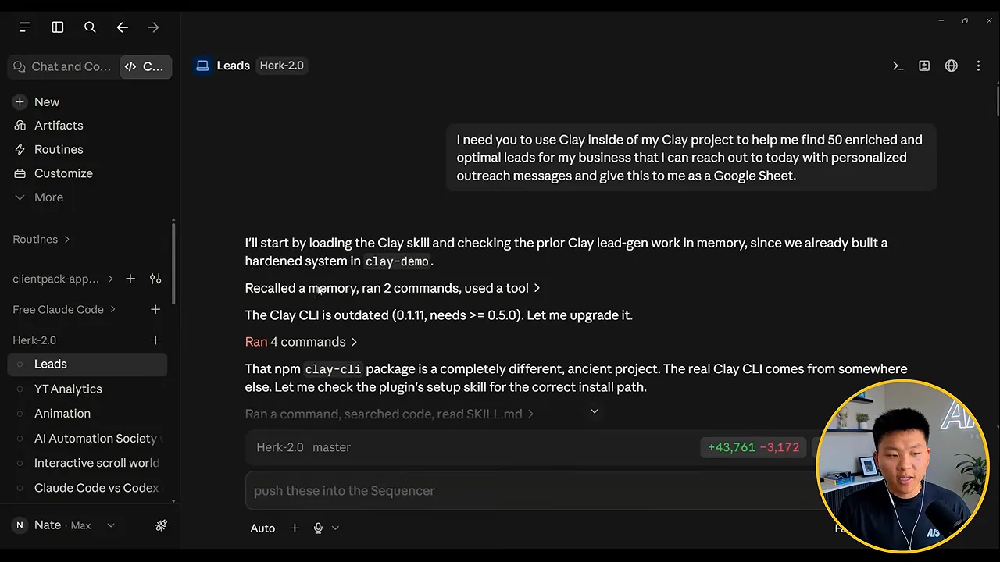
그 뒤로 Claude는 도구를 부르고, 생각하고, 결과를 확인하는 일을 계속 되풀이해요. 네이트는 이걸 에이전트 루프라고 불러요. 아래 그림이 그 순환이에요.
진행자가 Clay가 뭐냐고 묻자, 네이트는 B2B(Business to Business) 리드 데이터베이스이자 자동화 도구라고 답해요. 핵심은 그 도구의 화면을 배우지 않았다는 점이에요. API(Application Programming Interface) 키, 그러니까 Clay 비밀번호만 줬더니 Claude가 Clay를 어떻게 쓰는지 알아내서 리드를 가져왔어요.
You can outsource the thinking but you cannot outsource the understanding.
생각은 맡길 수 있어도, 이해는 맡길 수 없어요.
— 영상 24:02
그래서 왜 이 일을 시키는지, 돌아온 데이터가 무슨 뜻인지는 사람이 알아야 해요. 네이트는 유튜브 영상으로 다룰 내용도 Claude에게 조사하고 테스트하게 한 다음 '알아야 할 것'을 가르쳐 달라고 한대요.
10분 만에 나온 시트
결과는 10분이 안 걸렸어요. 시트 왼쪽 열을 보면 회사명과 의사결정권자 직함(대표, 소유주, 총괄 매니저 등)이 있고, 그 옆으로 이메일, 웹사이트, 설립 연도, 리뷰 수, 24시간 영업 광고 여부, 온라인 예약 여부가 이어져요. 리드 50개가 모두 한 업종(HVAC(Heating, Ventilation, and Air Conditioning) 업체)에 맞춰져 있어요. 데모용 가짜 사업 프로젝트에서 돌린 결과예요.
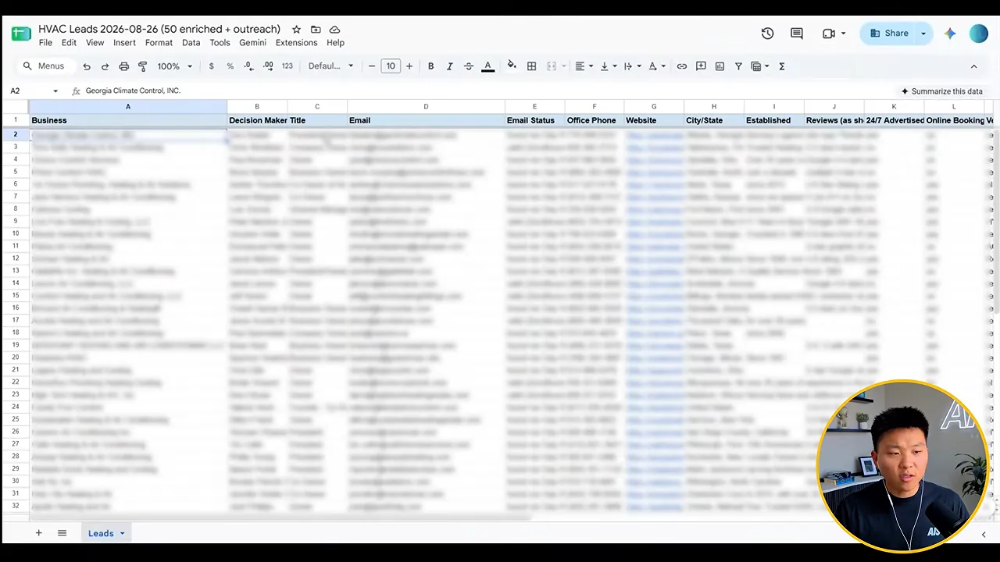
시트를 오른쪽으로 넘기면 개인화 훅의 근거, 이메일 제목, 이메일 본문, 검토 필요 여부 열이 나와요. 네이트는 이걸 읽고 승인한 뒤 'Clay로 보내거나 예약해 줘'라고만 하면 콜드 아웃리치가 끝난다고 해요.

보이지 않던 검증 과정
네이트가 마지막으로 보여 준 건 Claude가 남긴 실행 요약이에요. 미국 2~50인 규모 HVAC 업체 대표 1,250명에서 출발해 중복을 빼고 247명으로 줄였어요. 연구 에이전트 9개가 각 회사 웹사이트를 직접 확인해 렌털, 상업 전용, 프랜차이즈 업체를 걸러 냈어요. 다섯 번째 줄이 핵심이에요. 적대적 검증자 2개가 모든 주장을 팩트체크해 진짜 문제 5개를 잡았고, 다 고쳤대요. 7월 31일에 끝난 프로모션을 근거로 쓴 훅도 그중 하나예요.

진행자가 이 검증이 기본 기능이냐고 묻자, 네이트는 반반이라고 답해요. Claude Code는 모델을 감싼 하네스이고, 하네스도 약간의 확인은 해요. 업데이트마다 나아질 거라고 봐요. 하지만 '첫 초안은 절대 넘기지 말라'는 건 그가 지시문과 스킬, 프롬프트에 직접 넣어 둔 규칙이에요. 이 검증이 없었다면 틀린 정보로 엉뚱한 사람에게 메일을 보냈을 수도 있어요.
첫 결과가 별로인 이유: 자전거 방식과 AIOS의 4C
진행자는 많은 사람이 여기서 떨어져 나간다고 짚어요. 신이 나서 Claude Code에 말을 걸었는데 첫 결과가 평범하거나 별로면 'AI는 과대광고였다'며 떠나요. 네이트는 이 문제를 '자전거 방식'이라는 비유로 풀어요.
자전거 방식
스킬이든 워크플로든 처음 만들 때는 아이에게 자전거를 가르치듯 해야 해요. 아이를 자전거에 태우고 그냥 가 버리면 넘어져요. 옆에서 지켜보며 '왼쪽으로 너무 기울었어, 가운데로 와'처럼 피드백해야 해요. 그다음에 보조바퀴를 달고 한발 물러서고, 보조바퀴를 떼도 헬멧은 씌워요. 아래 그림은 그가 말한 순서를 그대로 옮긴 거예요.
데모 2: 유튜브 분석 리포트
두 번째 데모 프롬프트는 2026년 유튜브 분석을 Q1, Q2, 오늘까지의 Q3로 나눠 달라는 내용이에요. 눈여겨볼 건 두 번째 문단이에요. '추세와 잘된 것을 보고 Q4에 어떤 콘텐츠에 집중할지 정하려는 것'이라고 동기를 적었어요. 이유를 알려 주면 Claude가 그 맥락에 맞춰 결과를 다듬는다는 게 네이트의 설명이에요. 결과 형식(구글 시트)도 분명히 정했어요.
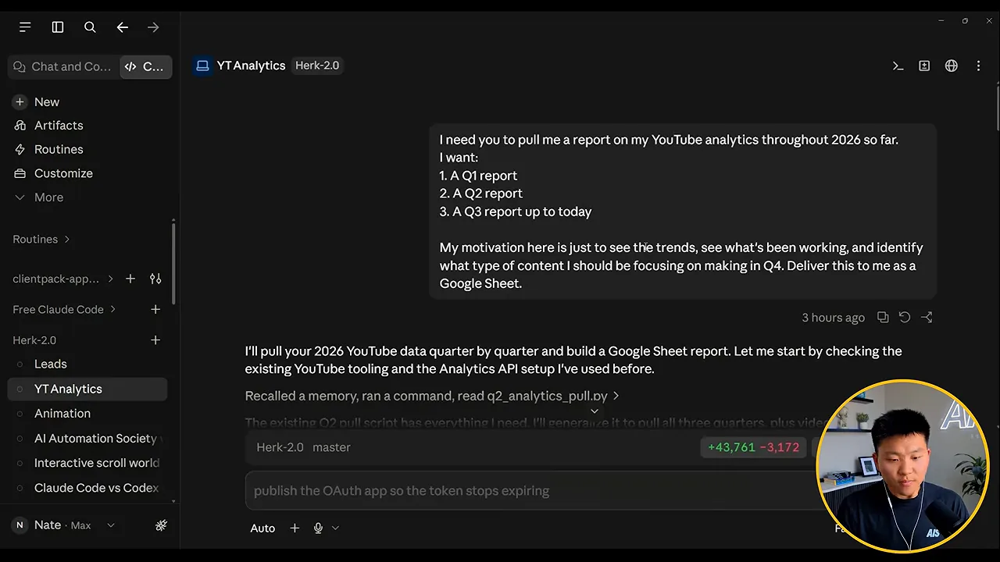
결과 시트의 Overview 탭 위쪽 '분기 점수판'에는 분기별 조회수, 일 평균 조회수, 시청 시간, 평균 시청 지속 시간, 구독자 증감이 나란히 있어요. 아래 '월별 추세'에는 1월부터 8월 26일까지가 정리돼 있어요. 맨 아래 탭을 보면 Overview, Q1·Q2·Q3 보고서, 콘텐츠 추세, Q4 집중 방향까지 탭이 6개예요.
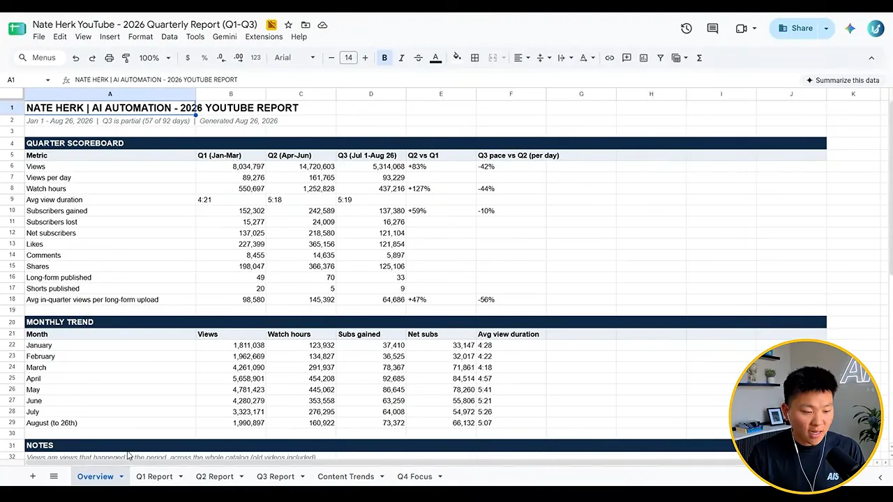
그다음에 뭘 하느냐는 질문에 네이트는 데이터를 직접 보고 이야기를 만든다고 답해요. 이해는 맡길 수 없으니까요. 대신 'Q3에 왜 튀었을까?'처럼 Claude를 생각 파트너로 써요. 이 데모에 없는 활용도 소개해요. 댓글 10만 개를 5분 안에 훑어 공통 주제를 뽑는 거예요. 매주 '이번 주 댓글 300개에서 나온 큰 고민 세 가지'를 알려 주는 자동화가 돌고, 자기 Skool 커뮤니티 질문도 같은 식으로 정리해요. 그래서 영상 아이디어가 모자랄 일이 없대요.
AIOS의 4C
진행자가 'Claude가 어떻게 이 모든 계정에 접근하느냐'고 묻자, 네이트는 화이트보드를 띄워요. 그는 컴퓨터로 하는 모든 일을 Chrome이나 각 앱 대신 Claude Code로만 해 보는 도전을 했고, 그렇게 만든 걸 AIOS(AI Operating System)라고 불러요. 화면 맨 위 'AI OS' 아래에 네 칸이 있어요.
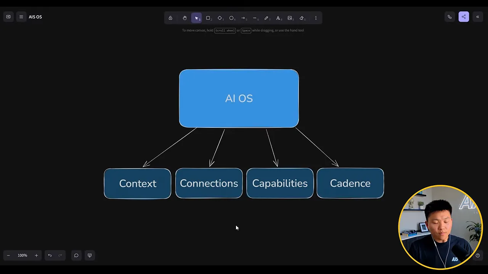
| C | 뜻 | 네이트의 설명 |
|---|---|---|
| Context | 맥락 | 나, 사업, 우선순위, 목표를 AI가 다 알아요. 여기까지 오면 같은 설명을 반복하지 않아요. 1단계예요 |
| Connections | 연결 | 메일, 캘린더, Slack, Skool, 유튜브처럼 매일 만지는 것을 AI도 만질 수 있어요 |
| Capabilities | 능력 | 자동화와 스킬을 만들어 둬요 |
| Cadence | 주기 | 내가 시키지 않아도 일정이나 이벤트로 돌아가게 켜 둬요. 자는 동안, 휴가 중에도요 |
네이트는 맥락, 연결, 능력을 날마다 조금씩 더한다고 해요. 기초가 탄탄하면 그 위에 계속 쌓기만 하면 된다는 거예요.
/goal로 밤새 돌리기: 영상 편집과 Calendly 클론
세 번째 데모는 영상 제작이에요. 네이트는 이 팟캐스트 출연 직전에 Claude에게 에피소드 브리프 문서를 주고 부탁했어요. 진행자에게 고마움을 전하는 10~15초짜리 애니메이션을 만들되, 오늘 다룰 내용에 맞추고 HyperFrames로 '모던하고 깔끔한 리퀴드 글래스 모션 그래픽, 글자만이 아니라 이야기를 담아'라고요.
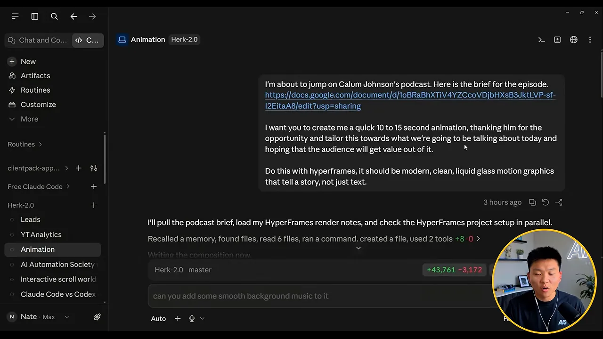
결과는 14초짜리 영상이에요. 'Calum, thanks for having me'라는 큰 문구 아래 '많은 가치를 얻어 가시길'이라는 문장이 떠요. 네이트도 대단한 결과물은 아니라고 인정해요. 다만 키프레임을 잡아 가며 손으로 만들면 15초짜리도 한 시간은 걸린다는 점을 짚어요.
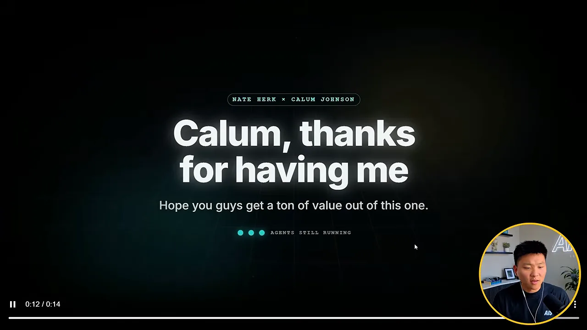
원본을 넣으면 편집된 영상이 나와요
더 인상적인 건 실제로 올린 유튜브 영상이에요. 15분짜리 원본을 파이프라인에 넣고 '유튜브용으로 편집해'라고 하자 약 10분짜리 영상이 나왔대요. 아래 장면을 보면 'LEAD QUAL' 사례를 설명하는 동안 리드 → 보강 → 점수 → 분류 → 예약·후속 연락으로 이어지는 흐름도가 그려지고, 가운데 '10 AGENTS'가 떠 있어요. 사례 하나가 끝나면 그 장면을 뒤로 밀어 두고 다음 번호로 넘어가요.
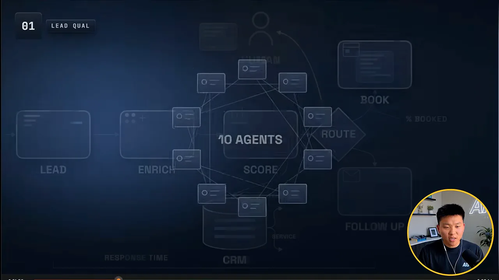
진행자가 '카메라 화면과 애니메이션을 언제 바꿀지도 AI가 정하느냐'고 묻자 네이트는 그렇다고 해요. 그가 설명한 파이프라인 순서를 그림으로 옮기면 이래요.
flowchart LR
A["원본 영상"] --> B["자막 뽑고 맥락 파악"]
B --> C["에이전트들이 넣을 애니메이션 토론"]
C --> D["HyperFrames로 제작"]
D --> E["브라우저에서 렌더링"]
E --> F["3초마다 스크린샷"]
F --> G{"화면 밖 요소, 브랜드 어긋남?"}
G -- "있음" --> C
G -- "없음" --> H["완성본"]
작업 폴더를 열어 보면 plan, qa, renders, scripts 폴더 아래로 index-intro, index-f01~f04, index-s02~s05, index-master 같은 HTML(HyperText Markup Language) 파일이 쌓여 있어요. 장면마다, 버전마다 따로 저장해 둔 거예요. 네이트는 최종 렌더가 'version 8 master'였다고 말해요. qa 폴더에는 검증 때 찍은 스크린샷이 들어 있어요.
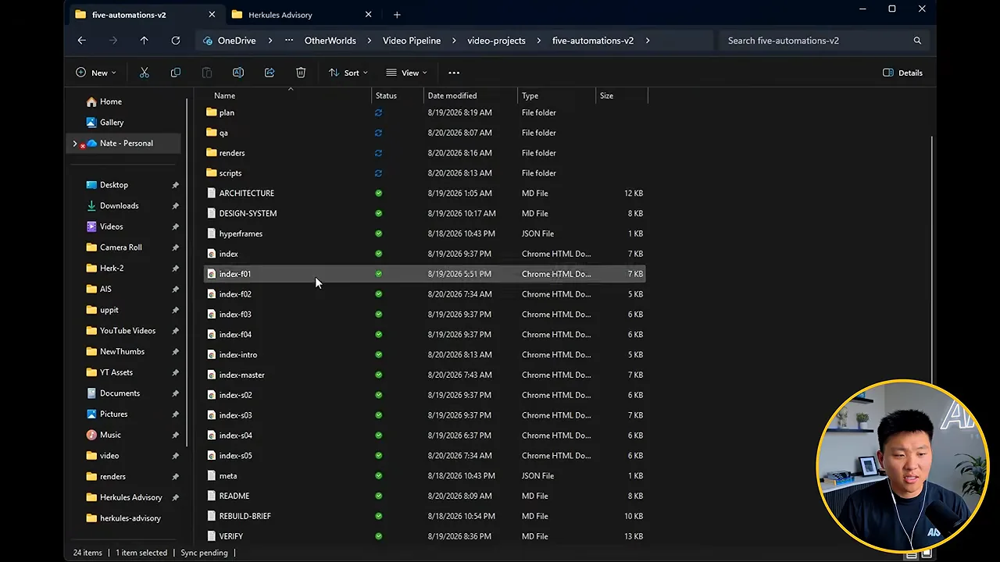
VERIFY한 편에 6~10시간 걸리기도 해서 자기 전에 돌려 두고 아침에 확인한대요. 그리고 매번 '여긴 좋았고 여긴 싫었어, 다음엔 이건 더 하고 저건 덜 하게 스킬을 고쳐'라고 말해요. 그래서 쓸수록 좋아진다고 해요.
/goal: 다 될 때까지 멈추지 않게
얼마나 자율적이냐는 질문에 네이트는 /goal을 꺼내요. 목표를 정하면 그 조건을 채울 때까지 멈추지 않는 기능이에요. 화면 입력창에 /goal을 치면 '조건을 만족할 때까지 계속 작업'이라는 설명이 떠요. 그는 Claude Code뿐 아니라 Hermes Agent, Codex에도 비슷한 기능이 있다고 말해요. 다만 연결과 권한이 제대로 안 잡혀 있으면 '이거 허락해 줘'라며 중간에 막힌대요.

데모 4: 4일 반 걸린 Calendly 클론
/goal로 4일 반 동안 만든 게 'SnagTime'이에요. 프롬프트는 '팀이 무료로 쓸 Calendly 클론을 만들고 싶어. Calendly를 조사해 좋은 기능을 정리하고, 계획하고, 만들고, 테스트해서 다 되면 줘'였어요. 네이트는 Calendly를 몰라도 이렇게 시킬 수 있다고 강조해요. 조사부터 Claude가 하니까요. 로그인하면 예약 유형 목록이 나와요. 무료 상담, 결제가 필요한 범위 확인 세션 같은 유형을 켜고 끌 수 있어요.
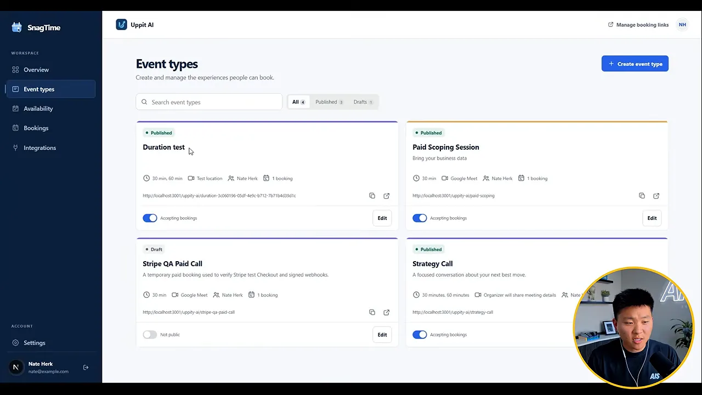
Integrations 화면에서는 무엇이 실제로 연결됐는지 보여요. 구글 캘린더는 Connected, Stripe는 아직 설정이 필요한 테스트 결제 상태, 예약 메일 발송은 Running이에요. 네이트도 Stripe는 샌드박스라고 말해요.
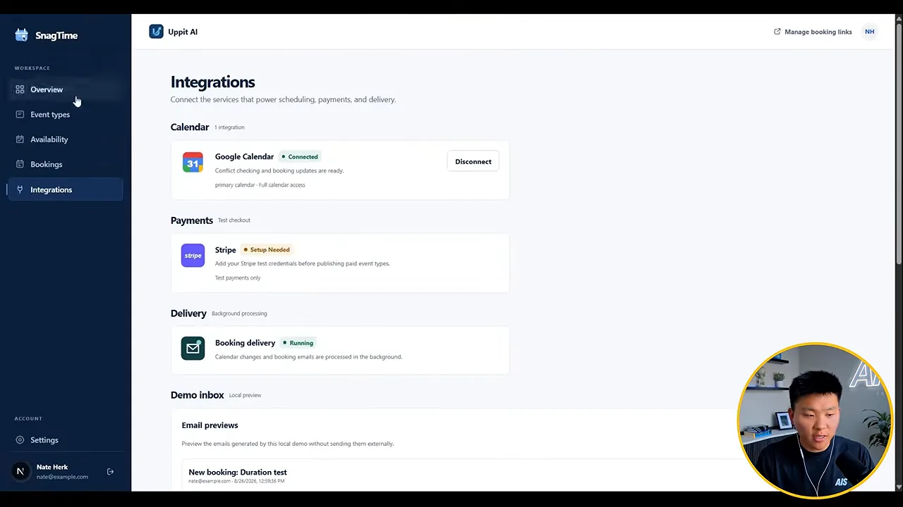
예약하는 사람이 보는 화면도 있어요. 왼쪽에 'Strategy Call' 설명, 오른쪽에 30분·60분 선택과 날짜·시간 칸이 있어요. 네이트는 금요일 칸이 자기 실제 캘린더와 맞물려 있다는 걸 보여 줘요. 캘린더에 일정을 넣고 새로고침하면 그 시간이 사라져요.
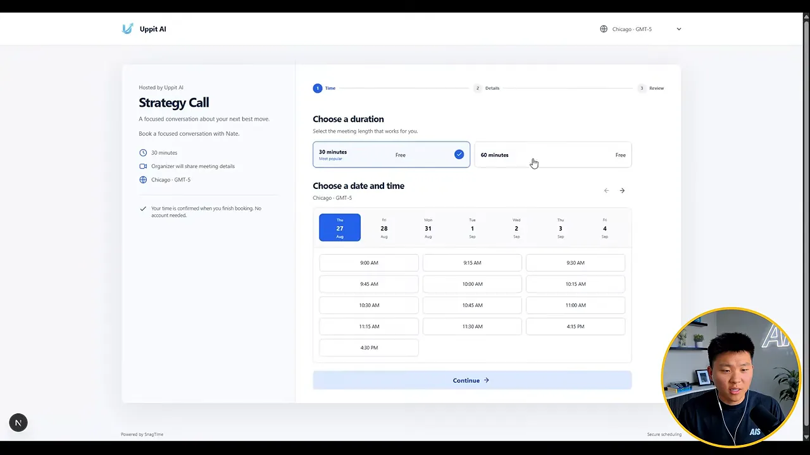
예약을 확정하면 주인에게 알림이, 예약한 사람에게 메일이 가요. 다시 구글 캘린더를 열면 'Strategy Call with Nate' 일정이 새로 생겨 있어요.
버그가 적은 이유도 설명해요. 에이전트 최소 50개가 가짜 계정과 가짜 예약을 만들고, 관리자처럼 로고를 바꾸고, 떠올릴 수 있는 거의 모든 경우의 버튼을 눌러 봤대요. 베타 사용자가 겪었을 버그를 미리 잡은 거예요. 아직 버그가 남아 있을 거라는 말도 덧붙여요. 그는 '에이전트 50개로 앱을 테스트해 줘'라는 말은 누구나 할 수 있지만, 그렇게 시킬 생각을 하는 사람이 적을 뿐이라고 해요.
지금 AI로 돈 버는 가장 쉬운 길
진행자는 대학을 막 졸업한 네이트에게 조언한다면 뭐라고 하겠느냐고 물어요. 답은 AI 서비스업이에요. 소상공인이 AI를 쓸 수 있게 역량을 키워 주는 일이에요. 그가 운영했던 에이전시와 컨설팅 회사가 바로 그 모델이었어요. 채워야 할 간극이 크고, 그 간극을 메워 줄 전문가를 찾는 사람이 많다는 게 이유예요.
서비스업에는 덤이 있어요. 아무도 AI가 어디로 갈지 정확히 모르는데, 기업과 일하면 업계마다 무엇을 걱정하고 어디서 막히는지 직접 들을 수 있어요. 그래서 방향을 틀어야 할 때 빨리 틀 수 있어요.
'AI'라는 접두어는 곧 떨어져요
지금은 'AI 컨설턴트'가 잘나가는 말이에요. 네이트는 이 접두어가 곧 떨어져 그냥 '컨설턴트'가 될 거라고 봐요. 인터넷 초기에 '인터넷 마케터', '디지털 마케터'가 있었지만 이제는 그냥 마케팅인 것과 같아요. AI를 안 쓰는 컨설턴트는 좋은 컨설턴트가 아니게 된다는 거예요. 초기에는 기업에 ChatGPT 사용법을 가르치며 월 1만 달러 넘게 벌던 사람들도 있었고, 그들은 이제 Cowork 같은 도구를 가르친대요.
제품을 만들고 싶다면 필요한 감각도 같아요. 어떤 고통이 있는지, 내 서비스가 그걸 어떻게 푸는지, 아주 구체적으로 누가 그 고통을 느끼는지 알아봐야 해요. 사람을 가르치며 패턴을 보는 게 그 훈련이라고 해요.
비개발자의 첫걸음
진행자가 '아직 Claude Code도 안 써 본 비개발자는 뭐부터 하느냐'고 묻자, 네이트는 기업과 일하며 예상 못 한 일이 '막막함 관리'였다고 말해요. 그래서 배우는 사람의 막막함을 자산으로 삼으라고 해요. 그가 말한 순서를 그림으로 옮겼어요.
그는 지금은 모두가 같은 출발선에 있다고 봐요. 우리는 수십 년 경력의 전문가에게 큰 가치를 두지만, 실제로 가장 배우기 쉬운 사람은 나보다 한두 걸음 앞선 사람이래요. 막 배우기 시작한 사람도 누군가에게는 그 한두 걸음 앞의 사람이 될 수 있다는 뜻이에요.
처음 열면 할 일: CLAUDE.md 만들기
진행자는 '데스크톱 앱을 처음 연 사람이 무엇부터 해야 하느냐'고 물어요. 네이트는 Claude Code가 내 컴퓨터의 폴더 안에서 일한다는 것부터 설명해요. 다운로드 폴더의 파일을 옮기고 이름을 바꾸고 정리할 수 있어요. 그래서 새 대화를 열 때마다 어떤 프로젝트 폴더에서 일할지 골라야 해요. 지금까지 데모는 전부 그의 AI 운영체제인 'Herk-2' 폴더에서 했어요.
그 폴더에서 '안녕'이라고만 쳐도 Claude는 먼저 CLAUDE.md를 읽어요. 네이트는 이 파일을 시스템 프롬프트라고 설명해요. 그의 CLAUDE.md

파일 대부분은 '라우팅 맵' 표예요. 왼쪽 열이 필요한 것, 가운데가 찾을 위치, 오른쪽이 규칙이에요. 사업·팀·지표가 필요하면 위키를, 말투가 필요하면 references/voice 폴더를, 유튜브 데이터가 필요하면 youtube-os 폴더를 보라는 식이에요. 법인·세금 같은 민감한 정보는 '공개 콘텐츠에 절대 드러내지 말라'는 규칙도 붙어 있어요.
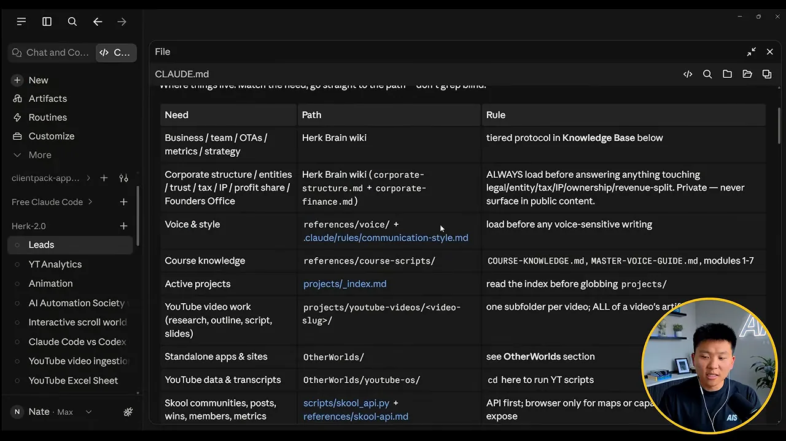
CLAUDE.md는 내용을 다 담지 않고 어디를 볼지 알려 줘요. 그래서 Claude가 헤매지 않고 바로 해당 파일로 가요. 영상 56:58에서 보기네이트는 이걸 처음부터 다 알 필요는 없다고 해요. 새로운 걸 알게 되거나 파일이 생기면서 매일 바뀌는 파일이래요.
빈 폴더에서 CLAUDE.md
CLAUDE.md이제 처음부터 해 봐요. 'Herkules Advisory'라는 가상 컨설팅 회사 폴더에는 브랜드 가이드 PDF(Portable Document Format)와 로고 파일 세 개만 있어요. 오른쪽 Files 패널에서 그 네 파일이 보여요. 네이트가 '안녕'이라고 치자 Claude는 '오늘 뭘 할까요?'라고만 답해요. 아직 아는 게 없으니까요.
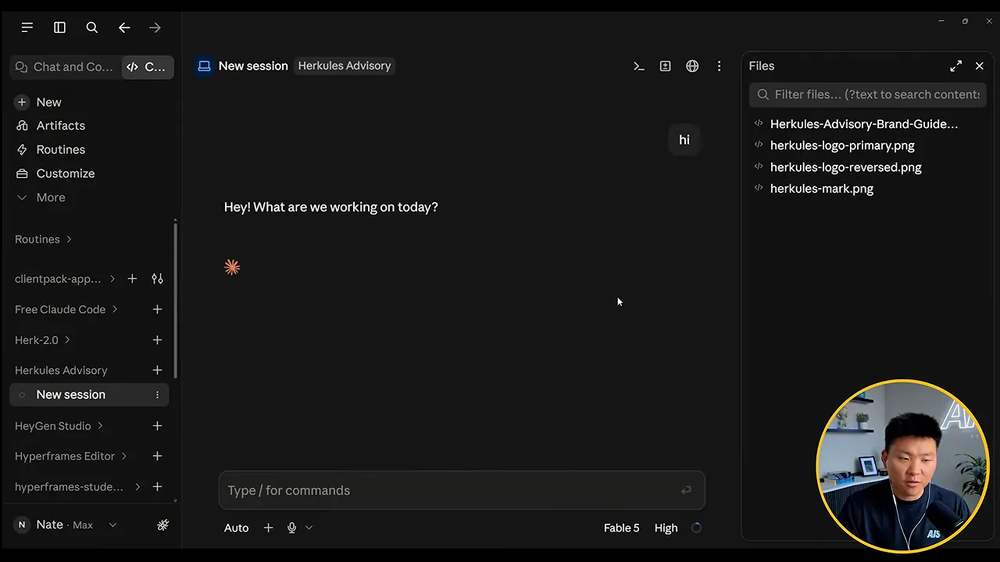
CLAUDE.md를 만들어 가는 과정을 보여 줘요. 영상 57:18에서 보기네이트는 말로 회사를 소개해요. '이건 Herkules Advisory라는 컨설팅 회사 프로젝트고, 여기서 자동화를 만들 거야. 지금 폴더엔 로고와 브랜드 가이드가 있고, 내 이름은 네이트야.' 그런데 Claude는 파일을 훑고 만들 만한 자동화(제안서 생성기, 주간 보고, 마케팅 자료)를 제안하기만 했어요. 네이트가 CLAUDE.md를 만들라고 하지 않았기 때문이에요. 그래서 'CLAUDE.md를 만들어 줘'라고 한 줄 더 쳤어요.
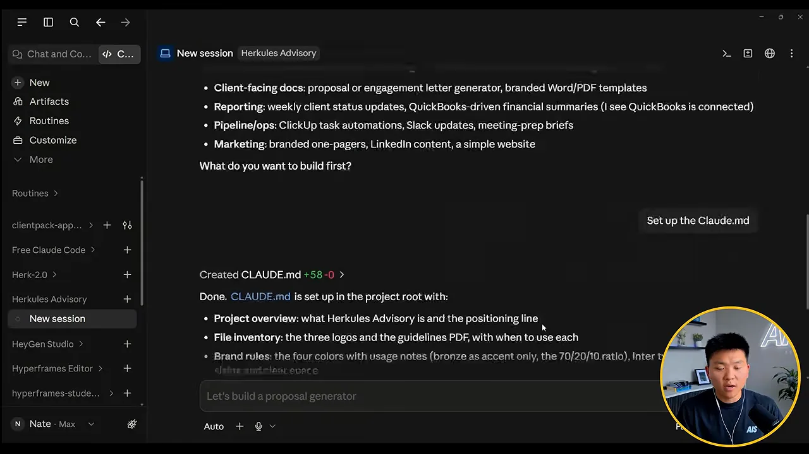
CLAUDE.md가 생겼어요. 영상 1:01:42에서 보기만들어진 파일을 열면 맨 위에 프로젝트 개요와 포지셔닝 문구가 있어요. 그 아래 Files 목록이 각 파일을 언제 쓰는지 알려 줘요. 기본 로고는 밝은 배경에, 반전 로고는 남색 배경에, H 마크는 파비콘 같은 작은 곳에 쓰라는 식이에요. 그 밑으로 색, 서체, 말투, 표기 규칙이 이어져요. 'Herkules는 k로 쓴다'는 규칙도 있어요.

네이트는 여기에 직접 '규칙' 섹션을 더해요. 결과물을 넘기기 전에 검증 단계를 거치고, 시각물이라면 스크린샷을 찍어 이미 확인했다는 걸 증명하라는 내용이에요. 마크다운 파일이라 메모장처럼 직접 고칠 수 있어요. 아래 화면은 파일 맨 끝에 '## Rules' 제목을 막 넣은 순간이에요.
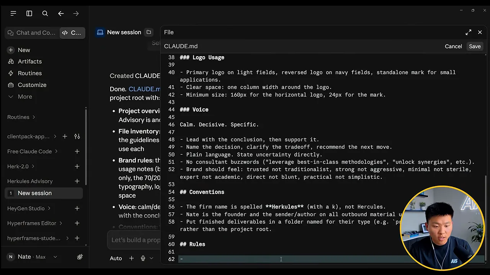
진행자는 이 과정이 신입 직원 온보딩과 같다고 정리해요. 첫 몇 주 동안 매니저 옆에서 직무 설명서와 온보딩 문서를 받는 것처럼, AI에게도 내 머릿속에 있는 걸 옮겨 줘야 해요. 네이트도 동의해요. 한 번 알게 된 건 저장해 두고 잊지 않으니까요.
스킬 만들기와 세 가지 검증
이제 자전거 방식을 직접 보여 줘요. 만들 건 스킬이에요. 네이트는 스킬을 '반복해서 쓰는 레시피'라고 설명해요. 초코칩 팬케이크를 한 번 맛있게 만들었다면 다음에도 그렇게 만들려고 레시피를 적어 두잖아요. 그는 LinkedIn 글쓰기 스킬이 있어서, 글을 부탁할 때마다 정해 둔 형식과 훅 구조를 따른다고 해요.
일부러 짧게 시켜요. 'market analysis라는 스킬을 만들고, 지금 SMB 대상 컨설팅 시장 리서치 리포트를 HTML로 만들어 줘.' 브랜드를 쓰라는 말도, 검증하라는 말도 없어요. 방금 만든 CLAUDE.md를 읽을지는 지켜봐야 해요. 같은 대화 안에서는 새로 읽지 않을 수도 있대요.
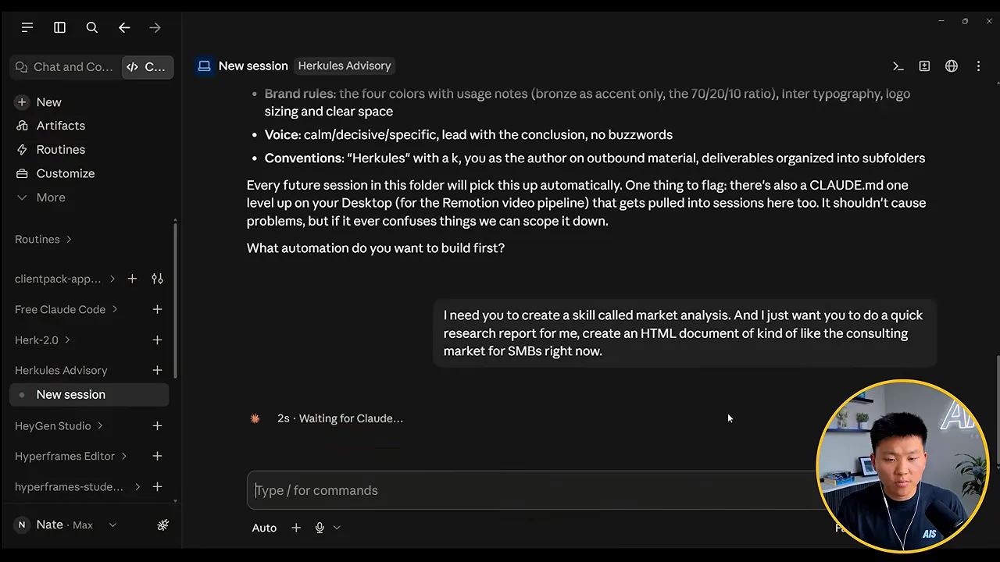
네이트는 프롬프트를 보내 놓고 다른 창으로 가 버리는 게 가장 흔한 실수라고 해요. 아래 화면을 보면 Claude가 SKILL.md를 만든 뒤 웹 검색을 다섯 번 해요. SMB(Small and Midsize Business) 컨설팅 시장 규모, 업계 동향, 중소기업의 고민, 파트타임 CFO(Chief Financial Officer) 시장, 부티크 컨설팅과 빅4 비교예요. 그다음 '리서치 완료, 로고를 넣어 리포트를 만든다'고 적어요. 브랜드를 쓰라고 하지 않았는데 CLAUDE.md를 읽은 거예요.
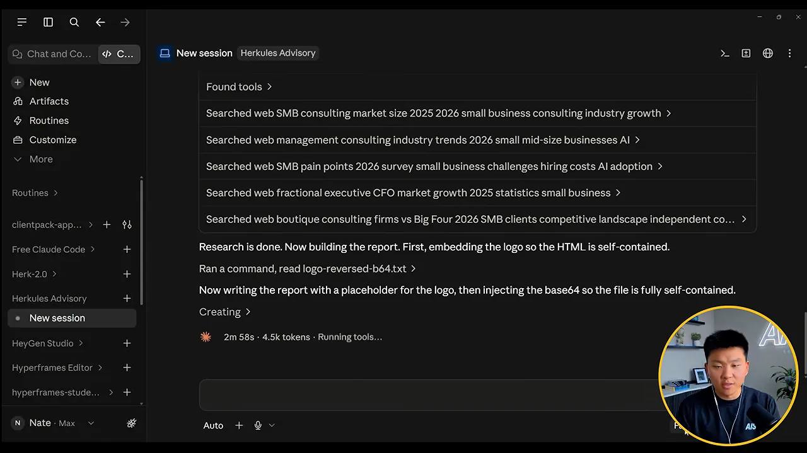
네이트는 Claude Code를 영상으로 배우지 않았대요. 며칠 동안 이렇게 지켜보기만 했어요. 예전엔 bash, glob, grep 같은 낯선 단어가 떴는데, 그 줄을 복사해 붙이고 '여기서 뭘 했어? 왜 glob을 썼어?'라고 물었대요. 어떻게 움직이는지 이해하니 더 잘 시키는 법이 보였다고 해요. 그는 Claude Code를 자동차에 비유해요. Fable 5 같은 모델은 엔진이고, Claude Code는 그 엔진을 감싼 차체, 즉 하네스예요. 엔진은 바꿔 끼울 수 있어요.
첫 결과와 피드백
약 4분 반 뒤 결과물 두 개가 나왔어요. 하나는 /market-analysis로 부를 수 있는 스킬 파일이고, 다른 하나는 로고가 들어간 HTML 리포트예요. 스킬 설명을 보면 '웹 리서치, 브랜드 HTML, CLAUDE.md의 브랜드 규칙, 새 규칙에 따른 스크린샷 검증'이 들어 있어요. 방금 추가한 규칙을 따른 거예요. 네이트는 '이 뉴스가 내 사업에 어떤 영향이 있을까?'처럼 물어도 Claude가 알아서 이 스킬을 쓸 거라고 말해요.

네이트가 보기엔 첫 결과로 괜찮아요. 브랜드도 맞고, 날짜와 요약, 시장 규모 섹션, 출처 16개도 있어요. 하지만 주장끼리 충돌하지 않는지, 출처가 믿을 만한지는 확인하지 않았어요. 그래서 이렇게 말해요. '시장 규모와 성장 부분이 더 필요해. 이런 리포트는 앞으로 매번 이 부분에 집중해 줘. 스크린샷 검증은 잘했는데, 다른 에이전트로 모든 사실이 맞고 낡지 않았는지 출처 검증도 항상 해. 그리고 스킬을 업데이트해.'
진행자는 '앞으로 매번'과 '스킬 업데이트'가 아주 작지만 중요한 차이라고 짚어요. 이걸 빼먹으면 다음 리포트도 똑같이 나오고, 같은 피드백을 반복하느라 시간을 잃어요. 아래 고리가 네이트가 말하는 자전거 방식의 한 바퀴예요.
flowchart LR A["스킬 실행"] --> B["결과 지켜보기"] B --> C["피드백: 좋은 점과 아쉬운 점"] C --> D["'앞으로 매번' 규칙으로 정리"] D --> E["스킬 파일 업데이트"] E --> A
네이트는 사람들이 이 단계를 미루는 이유도 짚어요. 직접 하면 30분이면 끝날 일을, 자동화하느라 두 시간 쓰는 게 아깝게 느껴지거든요. 만드는 동안은 생산성이 잠깐 떨어지지만 장기적으로 얻는 건 훨씬 크다는 거예요. 진행자는 '한 걸음 물러서는 것 같지만 실은 물러서는 게 아니다'라고 받아요.
서브 에이전트가 팩트체크하는 장면
피드백을 받은 Claude는 시장 규모 섹션을 키우고 스크린샷으로 다시 확인해요. 동시에 '1 running task'가 떠요. 별도 에이전트를 만들어 수치를 하나하나 확인하게 한 거예요. 오른쪽 패널이 메인 에이전트가 서브 에이전트에게 보낸 지시문이에요. '너는 이 리포트의 팩트체커야'로 시작해 확인할 주장 21개를 번호로 나열하고, 각각 확인됨·낡음·근거 없음으로 판정해 돌려 달라고 해요.

결과가 돌아왔어요. 왼쪽 가운데를 보면 '주장 21개 중 18개 확인, 1개 낡음, 2개 문제'라고 적혀 있고, 모두 고쳤대요. 오른쪽 리포트에는 커진 시장 규모 섹션이 보여요. 네이트는 이 검증이 없었다면 틀린 정보를 내보냈을 거라고 말해요.

검증 방식 세 가지
진행자는 네이트가 말한 검증을 세 가지로 묶고, 언제 무엇을 쓰는지 물어요. 네이트의 답을 표로 정리했어요.
| 방식 | 언제 쓰나요 | 잡아내는 것 |
|---|---|---|
| 스크린샷 | 보이는 결과물: 영상 프레임, HTML·PDF 리포트, 웹사이트 | 화면 밖으로 나간 요소, 밝은 배경 위 흰 글씨처럼 코드로는 모르는 문제 |
| 서브 에이전트 팩트체크 | 밖으로 나갈 모든 내용 | 틀리거나 낡은 수치, 근거 없는 주장 |
| 브라우저 조작 | 직접 만든 앱이나 사이트 | 버튼, 입력, 예약 흐름에서 나는 버그와 느린 동작 |
브라우저 조작은 Claude Code가 Chrome 같은 브라우저를 열고 화면을 보며 어디를 누를지 판단해 클릭하고 입력하는 거예요. Calendly 클론 때는 브라우저 50개를 띄워 예약하고 로고를 바꿔 봤고, 버그를 고친 뒤 다시 50개를 보내는 고리를 돌렸대요.
마지막으로 업데이트된 스킬 파일을 열어 보면 단계가 적혀 있어요. 주제 정하기, 리서치, 리포트 작성, 브랜드 HTML, 차분한 말투, 출처 검증(필수), 시각 검증이에요. 리서치 단계에는 '시장 규모와 성장은 네이트가 가장 중시하는 부분이라 깊게 파라'는 문장도 들어갔어요. 방금 준 피드백이 그대로 레시피가 된 거예요.

진행자는 네이트가 다른 영상에서 한 말을 꺼내요. 검증 없이 첫 결과만 보면 원하는 것의 60% 정도이고, 피드백과 검증이 붙어야 100%에 다가간다는 거예요. 사람들이 'AI 슬롭'이라 부르는 결과는 그 60%를 본 것이라고요. 네이트는 기대치를 맞추는 문제라고 덧붙여요. '좋은 결과'가 뭔지, 왜 필요한지 말해 줄수록 첫 결과부터 나아진대요.
이번 주말에 할 일: grill me 세션
진행자의 마지막 질문은 이거예요. 영상을 다 보고 자극받은 사람에게 토요일 오후나 일요일 저녁 몇 시간이 생겼다면, 3개월·6개월·12개월 뒤를 바꾸기 위해 무엇을 해야 하나요?
네이트의 답은 grill me 세션이에요. grill me는 원하는 주제를 다 이해할 때까지 끈질기게 인터뷰하는 스킬이에요. 아무것도 없는 새 Claude에 이 스킬을 넣고 '내 개인 라이프 코치가 돼 줘. 내 배경, 동기, 중요한 것, 가고 싶은 방향을 다 알아서 거기까지 가도록 도와줘'라고 하면 돼요. 질문이 50개쯤 나올 수도 있대요. 몇 시간 들여 머릿속을 다 쏟아 내라는 거예요.
flowchart LR A["빈 Claude 프로젝트"] --> B["grill me 스킬로 인터뷰"] B --> C["배경·동기·목표를 몇 시간 쏟아 내기"] C --> D["맥락을 파일로 저장"] D --> E["이후 모든 대화와 도구에서 재사용"]
인터뷰가 끝나면 시스템이 그걸 느낀대요. 평생 알던 사람과 이야기하는 기분이 들 수도 있다고 해요. 그 뒤로는 뭘 만들든, 아이디어를 검증하든 그 맥락을 바탕으로 훨씬 빨리 움직여요. 네이트가 가장 답답해하는 건 같은 말을 반복하거나 도구끼리 맞물리지 않는 거예요.
그는 자기 AI 운영체제 폴더를 Claude Code, Codex, Hermes Agent, OpenClaw 등 어떤 새 도구에든 꽂아 쓴다고 해요. 그러면 그 도구가 곧바로 자기를 다 알아요. 그래서 그 파일과 폴더가 지금 가진 가장 값진 자산, 자기 IP(Intellectual Property)라고 말해요.
That's like the most valuable thing I have right now is all those files and folders.
지금 제가 가진 가장 값진 건 그 파일과 폴더들이에요.
— 영상 1:22:55